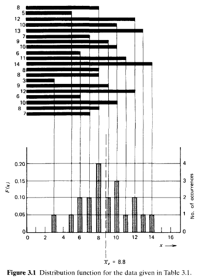
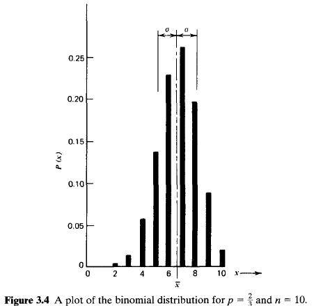
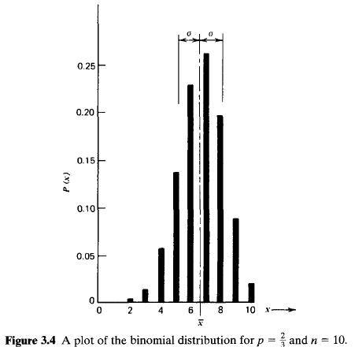

The value of counting statistics falls into two general categories. The first is to serve as a check on the normal functioning of a piece of nuclear counting equipment. Here a set of measurements is recorded under conditions in which all aspects of the experiment are held as constant as possible. Because of the influence of statistical fluctuations, these measurements will not all be the same but will show some degree of internal variation. The amount of this fluctuation can be quantified and compared with predictions of statistical models. If the amount of observed fluctuation is not consistent with predictions, one can conclude that some abnormality exists in the counting system. The second application is generally more valuable and deals with the situation in which we have only one measurement. We can then use counting statistics to predict its inherent statistical uncertainty and thus estimate an accuracy that should be associated with that single measurement.
The distinctions made in the organization of this chapter are a critical part of the topic. The confusion that often arises when the student is first introduced to counting statistics originates more from a failure to keep separate the concepts presented in Sections I and II than from any other single cause. In Section I we are careful to limit the discussion to methods used in the characterization or organization of experimental data. We are not particularly concerned where these data come from but rather are interested only in presenting the formal methods by which we can describe the amount of fluctuation displayed by the data. In Section II, we discuss the separate topic of probabilistic mathematical models, which can sometimes represent real measurement systems. For purposes of the discussion in Section II, however, we are concerned only with the structure and predictions of these models as mathematical entities. We reserve, until Section III, the demonstration of how the statistical models can be matched to experimental data, resulting in the two common applications of counting statistics mentioned above. In Section IV, we examine how the predicted statistical uncertainties propagate through the calculations typically needed to produce a quoted final result that is calculated from counting data. The final three sections of the chapter illustrate some further examples of applications of statistical principles in radiation measurements.
It is often convenient to represent the data set by a corresponding frequency distribution function \(F(x)\). The value of \(F(x)\) is the relative frequency with which the number appears in the collection of data. By definition \[ F(x) = \frac { \begin{eqnarray} \rm number \; of \; occurrences \; of \; the \; value \; \end{eqnarray} x } { \begin{eqnarray} \rm number \; of \; measurements \; \end{eqnarray} (= N) } \tag{3.3} \] The distribution is automatically normalized, that is, \[ \sum_{x = 0}^{\infty}F(x) = 1 \tag{3.4} \] As long as we do not care about the specific sequence of the numbers, the complete data distribution function \(F(x)\) represents all the information contained in the original data set.

For purposes of illustration, Table 3.1 gives a hypothetical set of data consisting of 20 entries. Because these entries range from a minimum of 3 to maximum of 14, the data distribution function will have nonzero values only between these extreme values of the argument x. The corresponding values of \(F(x)\) are also shown in Table 3.1.
A plot of the data distribution function for the example is given in Fig. 3.1. Also shown directly above the plot is a horizontal bar graph of the original 20 numbers from which the distribution was derived. These data show an experimental mean of 8.8, and the distribution function is in some sense centered about that value. Furthermore, the relative shape of the distribution function indicates qualitatively the amount of internal fluctuation in the data set. For example, Fig. 3.2 shows the shape of the distribution functions corresponding to two extreme sets of data: one with large amounts of scatter about the mean and one with little scatter. An obvious conclusion is that the width of the distribution function is a relative measure of the amount of fluctuation or scattering about the mean inherent in a given set of data.
It is possible to calculate the experimental mean by using the data distribution function, because the mean of any distribution is simply its first moment \[ \overline{x}_{e} = \sum_{x = 0}^{\infty}xF(x) \tag{3.5} \] It is also possible to derive another parameter, called the sample variance, which will serve to quantify the amount of internal fluctuation in the data set. The first step is to define the


We next define the deviation of a given data point as the amount by which it differs from the true mean value \(\overline{x}\)
\[ \epsilon_{i} \equiv x_{i} - \overline{x} \tag{3.7} \] The deviation defined in this way is similar to the residual introduced above, except that the distance from the true mean value \(\overline{x}\) appears in the definition rather than the experimental mean \(\overline{x}_{e}\). We now can introduce the definition of the sample variance as the average value of each of these deviations after squaring \[ s^{2} = \overline{\epsilon^{2}} = \frac{1}{N}\sum_{i = 1}^{N}(x_{i} - \overline{x})^{2} \tag{3.8} \] The sample variance is a useful index of the degree of the internal scatter in the data or as a measure of how different a typical number is from another.This definition presents a practical difficulty, since we can never know the exact value of the true mean \(\overline{x}\) without collecting an infinite number of data points. The best we can do is to use the experimental mean value \(\overline{x}_{e}\) that we have measured, and thus use rcsiduals rather than deviations. But the process of using the experimental rather than the true mean value will affect the calculated value of the sample variance, and we cannot simply substitute \(\overline{x}_{e}\) iein to Eq. 3.8. Instead, the analysis given in Appendix B shows that the alternative expression
\[ s^{2} = \frac{1}{N - 1}\sum_{i = 1}^{N}(x_{i} - \overline{x})^{2} \tag{3.9} \] is now valid when the experimental mean is used. The sum of squared residuals in the above equation is divided by \(N - 1\) rather than by \(N\) as in Eq. 3.8, a distinction that is significant only when the number of measurements \(N\) is small. For large data sets, therefore, the sample variance can be thought of as the mean squared value of either the residuals or the deviations.The sample variance \(s^{2}\) for the example of 20 numbers is shown graphically in Fig. 3.3~. Because it is essentially a measure of the average value of the squared deviations of each point, \(s^{2}\) is an effective measure of the amount of fluctuation in the original data. A data set with a narrow distribution will have a small typical deviation from the mean, and therefore the value for the sample variance will be small. On the other hand, data with a large amount of fluctuation will have a wide distribution and a large value for typical deviations, and the corresponding sample variance will also be large. It is important to note that the sample variance is an absolute measure of the amount of internal scatter in the data and does not, to first approximation, depend on the number of values in the data set. For example, if the data shown in Fig. 3.3 were extended by simply collecting an additional 20 values by the same process, we would not expect the sample variance calculated for the extended collection of 40 numbers to be substantially different from that shown in Fig 3.3.
We can also calculate the sample variance directly from the data distribution function \(F(x)\). Because Eq. (3.8) indicates that \(s^{2}\) is simply the average of \((x - \overline{x})^{2}\), we can write that same average as
\[ s^{2} = \sum_{x = 0}^{\infty}(x - \overline{x})^{2}F(x) \tag{3.10} \] Equation (3.10) is not introduced so much for its usefulness in computation as for the parallel it provides to a similar expression, Eq. (3.17), which will be introduced in a later discussion of statistical models. An expansion of Eq. (3.10) will yield the well-known result \[ s^{2} = \overline{x^{2}} - (\overline{x})^{2} \tag{3.11} \]We now end our discussion of the organization of experimental data with two important conclusions:
The experimental mean is given by Eq. (3.5) and is the value about which the distribution is centered.The sample variance is given by Eq. (3.10) and is a measure of the width of the distribution, or the amount of internal fluctuation in the data.
To show how these conditions apply to real situations, Table 3.2 gives three separate examples. The third example indicates the basis for applying the theoretical framework that follows to the case of counting nuclear radiation events. In this case a trial consists of observing a given radioactive nucleus for a period of time t, the number of trials is equivalent to the number of nuclei in the sample under observation, and the measurement consists of counting those nuclei that undergo decay. We identify the probability of success of any one trial asp. In the case of radioactive decay, that probability is equal to \((1 - e^{- \lambda t})\). where \(\lambda\) is the decay constant of the radioactive sample.
Three specific statistical models are introduced:
It should be emphasized that all the above models become identical for processes with a small individual success probability p but with a large enough number of trials so that the expected mean number of successes is large.
We show one example of an application of the binomial distribution. Imagine that we have an honest die so that the numbers 1 through 6 are all equally probable. Let us define a successful roll as one in which any of the numbers 3,4,5,o r 6 appear. Because these are four of the six possible results, the individual probability of success p is equal to \(\frac{4}{6}\) or 0.667. We now roll a die a total of 10 times and record the number of rolls that result in success as defined above. The binomial distribution now allows us to calculate the probability that exactly x out of the 10 trials will be successful, where x can vary between 0 and 10. Table 3.3 gives the values of the predicted probability distribution from Eq. (3.12) for the parameters \(p = \frac{2}{3}\) and n = 10. The results are also plotted in Fig. 3.4 .We see that 7 is the most probable number of successes from 10 rolls of the die, with a probability of occurrence slightly greater than one out of four. From the value of P(0) we see that only twice out of 100,000 tests would we expect to see no successes from 10 rolls of the die.
 

Some properties of the binomial distribution are important. First, the distribution is normalized: \[ \sum_{x = 0}^{n}P(x) = 1 \tag{3.13} \] Also, we know that the average or mean value of the distribution is given by \[ \overline{x} = \sum_{x = 0}^{n}xP(x) \tag{3.14} \] If we now substitute Eq. (3.12) for P(x) and carry out the summation, a remarkably simple result is derived: \[ \overline{x} = pn \tag{3.15} \] Thus, we can calculate the expected average number of successes by multiplying the number of trials n by the probability p that any one trial will result in a success. In the example just discussed, we calculate an average number of successes as \[ \overline{x} = pn = \left( \frac{2}{3} \right) (10) = 6.67 \tag{3.16} \] The mean value is obviously a very fundamental and important property of any predicted distribution.
It is also important to derive a single parameter that can describe the amount of fluctuation predicted by a given distribution. We have already defined such a parameter, called the sample variance, for a set of experimental data as defined in Eq. (3.10). By analogy we now define a predicted variance \(\sigma^{2}\), which is a measure of the scatter about the mean predicted by a specific statistical model P(x): \[ \sigma^{2} = \sum_{x = 0}^{n}(x - \overline{x})^{2}P(x) \tag{3.17} \] Conventionally, \(\sigma^{2}\) is called the variance, and we emphasize the fact that it is associated with a predicted probability distribution function by calling it apredicted varimce. It is also conventional to define the standard deviation as the square root of \(\sigma^{2}\). Recall that the variance is in some sense a typical value of the squared deviation from the mean. Therefore, \(\sigma\) represents a typical value for the deviation itself, hence the name "standard deviation."
Now if we carry out the summation indicated in Eq. (3.17) for the specific case of P(x) given by the binomial distribution, the following result is obtained: \[ \sigma^{2} = np(1 - p) \tag{3.18} \] Because \(\overline{x} = np\), we can also write \[ \sigma^{2} = \overline{x}(1 - p) \tag{3.19} \] \[ \sigma = \sqrt{\overline{x}(1 - p)} \tag{3.20} \] We now have an expression that gives an immediate prediction of the amount of fluctuation inherent in a given binomial distribution in terms of the basic parameters of the distribution, n and p, where \(\overline{x} = np\).
To return to the example of rolling a die, we defined success in such a way that \(p = \frac{2}{3}\). We also assumed 10 rolls of the die for each measurement so that n = 10. For this example, the predicted mean number of successes is 6.67 and we can proceed to calculate the predicted variance \[ \sigma^{2} = np(1 - p) = (10)(0.667)(0.333) = 2.22 \tag{3.21} \] By taking the square root we get the predicted standard deviation: \[ \sigma = \sqrt{\sigma} = \sqrt{2.22} = 1.49 \tag{3.22} \] The significance of the standard deviation is illustrated in Fig. 3.4 .The mean value of the distribution is shown as the dashed line, and one value of the standard deviation is shown on either side of this mean. Because \(\sigma\) is a typical value for the difference between a given measurement and the true value of the mean, wide distributions will have large values for a and narrow distributions will correspond to small values. The plot illustrates that the association of \(\sigma\) with the width of the distribution is not inconsistent with the example shown in Fig. 3.4.
It can be shown that for a constant and small probability of success, the binomial distribution reduces to the form \[ P(x) = \frac{(pn)^{x}e^{-pn}}{x!} \tag{3.23} \] Because \(pn = \overline{x}\) holds for this distribution as well as for the parent binomial distribution, \[ P(x) = \frac{(\overline{x})^{x}e^{- \overline{x}}}{x!} \tag{3.24} \] which is now the familiar form of the Poisson distribution.
Recall that the binomial distribution requires values for two parameters: the number of trials n and the individual success probability p. We note from Eq. (3.24) that a significant simplification has occurred in deriving the Poisson distribution — only one parameter is required, which is the product of n and p. This is a very useful simplification because now we need only know the mean value of the distribution in order to reconstruct its amplitude at all other values of the argument. That is a great help for processes in which we can in some way measure or estimate the mean value, but for which we have no idea of either the individual probability or the size of the sample. Such is usually the case in nuclear measurements.
Some properties of the Poisson distribution follow directly. First, it is also a normalized distribution, or \[ \sum_{x = 0}^{n}P(x) = 1 \tag{3.25} \] We can also calculate the first moment or mean value of the distribution: \[ \overline{x} = \sum_{x = 0}^{n}xP(x) = pn \tag{3.26} \] which is the intuitively obvious result also obtained for the binomial distribution. The predicted variance of the distribution, however, differs from that of the binomial and can be evaluated from our prior definition \[ \sigma^{2} = \sum_{x = 0}^{n}(x - \overline{x})^{2}P(x) = pn \tag{3.27} \] or noting the result from Eq. (3.26) \[ \sigma^{2} = \overline{x} \tag{3.28} \] The predicted standard deviation is just the square root of the predicted variance, or \[ \sigma = \sqrt{\overline{x}} \tag{3.29} \]
Thus, we see that the predicted standard deviation of any Poisson distribution is just the square root of the mean value that characterizes that same distribution. Note that the corresponding result obtained earlier for the binomial distribution [Eq. (3.20)] reduces to the above result in the limit of \(p \ll 1\) already incorporated into the Poisson assumptions.
We again illustrate with an example. Suppose we randomly select a group of 1000 people
and define our measurement as counting the number of current birthdays found among
all members of that group. The measurement then consists of 1000 trials, each of which is a
success only if a particular individual has his or her birthday today. If we assume a random
distribution of birthdays, the probability of success p is equal to 1/365. Because p is much
less than one in this example, we can immediately turn to the Poisson distribution to evaluate
the probability distribution function that will describe the expected results from many
such samplings of 1000 people. Thus, for our example,
\[
p = 1 / 365 = 0.00274 \\
n = 1000 \\
\overline{x} = pn = 2.74 \\
\sigma = \sqrt{\overline{x}} = 1.66 \\
P(x) = \frac{\overline{x}^{x}e^{-\overline{x}}}{x!} = \frac{(2.74)^xe^{-2.74}}{x!}
\]


Recall that P(x) gives the predicted probability that exactly x birthdays will be observed from a random sampling of 1000 people. The numerical values are plotted in Fig. 3.5 and show that x = 2 is the most probable result. The mean value of 2.74 is also shown in the figure, together with one value of the standard deviation of 1.66 on either side of the mean. The distribution is roughly centered about the mean value, although considerable asymmetry is evident for this low value of the mean. Again the size of the standard deviation gives some indication of the width of the distribution or the amount of scatter predicted by the distribution.
We can again illustrate an example of a physical situation in which the Gaussian distribution is applicable. Suppose we return to the previous example of counting birthdays out of a group of randomly selected individuals, but now consider a much larger group of 10,000 people. For this example, \(p = \frac{1}{365}\) and \(n = 10,000\), so the predicted mean value of the distribution \(\overline{x} = np = 27.4\). Because the predicted mean is larger than 20, we can turn to the Gaussian distribution for the predicted distribution of the results of many measurements, each of which consists of counting the number of birthdays found in a different group of 10,000 people. The predicted probability of observing a specific count x is then given by \[ P(x) = \frac{1}{\sqrt{2 \pi \cdot 27.4}}\exp \left( - \frac{(x - 27.4)^2}{2 \cdot 27.4} \right) \tag{3.31} \] and the predicted standard deviation for the example is \[ \sigma = \sqrt{\overline{x}} = \sqrt{27.4} = 5.23 \tag{3.32} \] The results are shown graphically in Fig. 3.6a.
Two important observations can be made at this point about the Gaussian distribution:
Figure 3.6b shows the continuous form of the Gaussian distribution for the same example chosen to illustrate the discrete case. Comparing Fig. 3.6a and 3.6b, the scale factors for each abscissa are the same but the origin for Fig. 3.6b has been shifted to illustrate that a value of zero for the deviation \(\epsilon\) corresponds to the position of the mean value \(\overline{x}\) on Fig. 3.6a. If a factor of 2 difference in the relative ordinate scale is included as shown, then the continuous distribution \(G(\epsilon)\) represents the smooth curve that connects the pointwise values plotted in Fig. 3.6a.
Because we are now dealing with a continuous function, we must redefine some properties of the distribution as shown in Fig. 3.7. It should be particularly noted that quantities of physical interest now involve integrals of the distribution between set limits, or areas under the curve, rather than sums of discrete values.
Equation (3.33) can be rewritten in a more general form by incorporating several observations. We have already seen that the standard deviation \(\sigma\) of a Gaussian distribution is given by \(\sigma = \sqrt{\overline{x}}\), or \(\overline{x} = \sigma^{2}\). With this substitution in Eq. (3.33), the value of the exponential factor now depends only on the ratio of \(\epsilon\) tp \(\sigma\). Formally defining this ratio as \[ t \equiv \frac{\epsilon}{\sigma} \] the Gaussian distribution can be rewritten in terms of this new variable t: \[ G(t) = G(\epsilon)\frac{d \epsilon}{dt} = G(\epsilon)\sigma \] \[ G(t) = \sqrt{\frac{2}{\pi}}e^{-t^{2}/2} \tag{3.34} \] where \(0 \leq t \leq \infty\). We now have a universal form of the Gaussian distribution, shown in Fig. 3.8, that is valid for all values of the mean \(\overline{x}\). Recall that t is just the observed deviation \(\epsilon \equiv |x - \overline{x}|\) normalized in units of the standard deviation \(\sigma\).

From the definitions illustrated in Fig. 3.7, the probability that a typical normalized deviation t predicted by a Gaussian distribution will be less than a specific value \(t_{0}\) is given by the integral \[ \int_{0}^{t_{0}}G(t)dt \equiv f(t_{0}) \]
Tabulated values of this function can be found in most collections of statistical tables. Some selected values are given in Table 3.4. The value of \(f(t_{0})\) gives the probability that a random sample from a Gaussian distribution will show a normalized deviation \(t\)(\(\equiv \epsilon/\sigma\)) that is less than the assumed value to. For example, we can conclude that about 68% of all samples will deviate from the true mean by less than one value of the standard deviation.